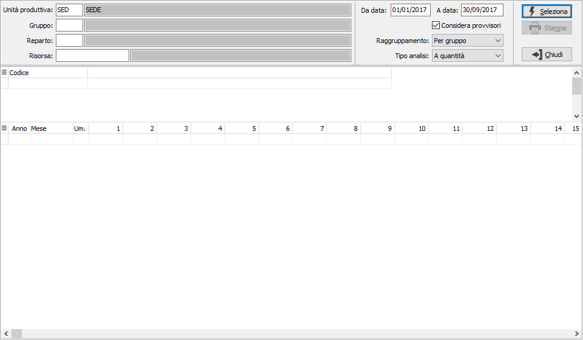
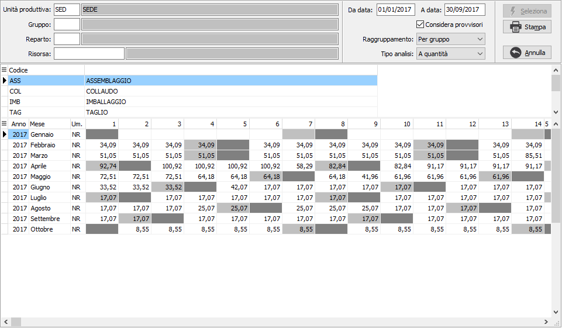
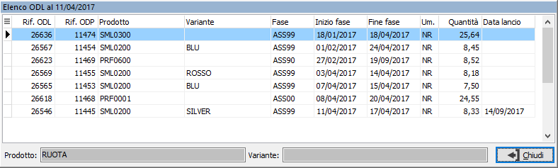

Analisi carichi risorse
La funzione consente di ottenere, direttamente dai dati elaborati dal piano (quindi basati su calcoli a capacità infinita), le quantità/i tempi assegnati ai vari gruppi risorse/reparti/risorse.
L’analisi fornisce una informazione teorica del carico delle risorse (quantità assegnata/tempo occupato giornalmente ad ogni risorsa) che però può essere comunque indicativa di momenti di maggiore o minore carico. Può essere utilizzata anche su un orizzonte temporale a più lungo termine rispetto alla schedulazione.
Per eseguire l'analisi non è necessario effettuare la schedulazione delle attività.
Sono presenti nella parte sinistra i campi utilizzati come filtro di selezione per gruppo, reparto o risorsa; è possibile analizzare gli ODL aperti per un determinato periodo e decidere di considerare nell'analisi anche gli ODL provvisori spuntando la relativa casella; il tipo analisi per gruppo, per reparto o per risorsa determina la composizione della griglia superiore ed il tipo analisi determina se si voglio visualizzare le quantità oppure i tempi.

Effettuando la selezione vengono mostrati i risultati; nella griglia superiore compaiono i dati relativi al tipo analisi e nella griglia inferiore in periodi, suddivisi per anno/mese, dove sono presenti dei giorni con risorse cariche e le relative quantità divise per unità di misura oppure i tempi a seconda del tipo analisi scelto; il pulsante Stampa consente di stampare i dati relativi al codice selezionato oppure totali.

Tramite il pulsante Stampa oppure il menù del tasto destro del mouse sulla griglia inferiore è possibile effettuare la stampa del singolo elemento o di tutta l'analisi; è possibile anche visualizzare il dettaglio degli ODL della casella su cui si è posizionati, anche con il doppio clic del mouse.
